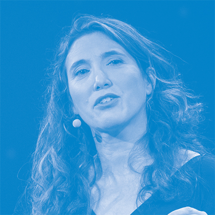
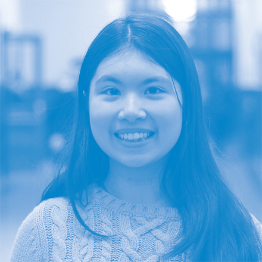
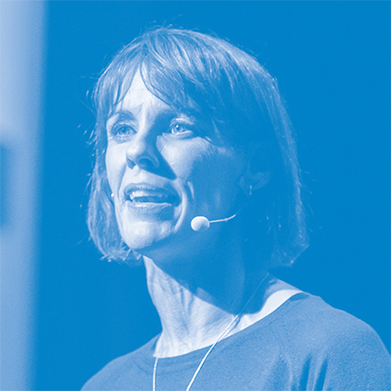

와 제 롤모델이 잡스에요!!! 아이폰 첫 출시되고 나서부터 계속 아이폰 쓰고 있는데 잡스가 너무 그리워요ㅠㅠ 지금은 돈만 벌려고 하는 것 같아서 디자인 발전도 없고ㅠㅠ와 제 롤모델이 잡스에요!!! 아이폰 첫 출시되고 나서부터 계속 아이폰 쓰고 있는데 잡스가 너무 그리워요ㅠㅠ 지금은 돈만 벌려고 하는 것 같아서 디자인 발전도 없고ㅠㅠ와 제 롤모델이 잡스에요!!! 아이폰 첫 출시되고 나서부터 계속 아이폰 쓰고 있는데 잡스가 너무 그리워요ㅠㅠ 지금은 돈만 벌려고 하는 것 같아서 디자인 발전도 없고ㅠㅠ와 제 롤모델이 잡스에요!!! 아이폰 첫 출시되고 나서부터 계속 아이폰 쓰고 있는데 잡스가 너무 그리워요ㅠㅠ 지금은 돈만 벌려고 하는 것 같아서 디자인 발전도 없고ㅠㅠ와 제 롤모델이 잡스에요!!! 아이폰 첫 출시되고 나서부터 계속 아이폰 쓰고 있는데 잡스가 너무 그리워요ㅠㅠ 지금은 돈만 벌려고 하는 것 같아서 디자인 발전도 없고ㅠㅠ
TED
행복한 가정을 이루고 싶은 당신을 위한 TED
TED는 미국의 비영리 재단으로 “널리 퍼져야 할 아이디어(Ideas worth spreading)”를 모토로 기술, 교육, 정치, 사회, 예술 등 다양한 주제로 강연회를 개최하고 있다. <바다소리>는 이달부터 매달 다른 주제의 강연 동영상을 소개한다.
영국의 시인 로버트 브라우닝은 “행복한 가정은 미리 누리는 천국이다”라는 명언을 남겼다. 그만큼 행복한 가정은 우리 모두가 꿈꾸는 작은 세상이며 행복한 세상을 이룰 수 있는 근간이다. 가정의 달을 맞이해 행복한 가정을 이루고 싶은 이들을 위한 짧은 강연 동영상을 소개한다.
글
편집실
-

Jennifer Senior
행복, 부모들에게 아주 높은 목표
제니퍼 시니어 _ 칼럼니스트
수많은 양육 관련 서적들이 넘쳐나는 시대. 제니퍼 시니어(Jennifer Senior)는 이를 “우리 모두가 공황에 빠지길 원하는 다양한 색의 거대한 기념비”라고 말한다. 왜 육아는 많은 부모를 혼란 시킬까?현대 사회에서 부모가 행복한 아이를 키우는 목표를 찾기 어렵기 때문이아닐까.현대 사회에서는 아이를 키우는 부모가 된다는 것 차제가 바로 위기다.세상은 아주 빠르게 변화하고 마찬가지로 육아의 방식도 빠르게 변화했다. 미래를 예측하기 힘든 상황에서 부모들은 모든 시간과 에너지와 자원을 아이들에게 퍼붓지만, 여전히 육아에 많은 혼란을 느낀다.그녀는 일종의 성취할 수 있는 목표를 몇 가지 제시한다.
-
Bruce Feiler
가족을 위한 애자일 프로그래밍
브루스 페일러 _ 작가
브루스 페일러(Bruce Feiler)는 애자일(Agile)이라 불리는 프로그램을통해 ‘무엇이 더 행복한 가정을 만들 수 있는지’ 에 대한 답을 찾았다.실무자들이 작은 그룹으로 나뉘어 빠른 시간 안에 일을 하고, 실무자가지시를 받는 대신 팀별로 스스로 관리하는 애자일 프로그램을 가정에적용시킨 것이다. 브루스 페일러는 아이들에게 지속적인 피드백을 받고, 매일 새로운 활동을 하며, 끊임 없이 변화했다. 그로 인해 가족 회의를 통해 대화 시간이 늘어났고, 스트레스가 해소됐으며 가족이 더 행복해 질 수 있었다.행복은 우리가 발견하는 것이 아닌, 만드는 것이다. 방대한 계획이나 전승이 필요하지 않다. 그저 한발한발 내딛고 작은 성공을 차근차근 쌓아 결승점에 도달하는 것이다. 행복한 가족이 되는 비결은 우리의 ‘노력’이다.
-

Adora Svitak
어른이 아이들에게 배울만한 것들
아도라 스비탁 _ 단편 소설 작가
천재소녀 아도라 스비탁(Adora Svitak)은 대담한 아이디어, 독창성, 특히낙관주의와 같은 세계에서 ‘유치한’ 생각이 필요하다고 말한다. 어른들은아이들에게서 듣고, 배우고, 조금 더 믿을 필요가 있으며, 아이들을 위해서말할 기회를 만드는 것은 굉장히 중요한 일이다. 왜냐하면 아이들은 미래의지도자들이기 때문이고 실제로 이 세상을 진전시키는 사람은 우리 아이들이기 때문이다.아도라 스비탁은 1997년에 태어난 작가 겸 시인이다. 6살때 처음으로 쓴글이 미국 시애틀 신문에 실려 그녀의 역량이 알려졌으며, 7살 때 ABC 방송 ‘굿모닝 아메리카’ 인터뷰로 세상의 주목을 받기 시작했다.
-

Caroline Paul
딸을 용감하게 키우는 방법
캐롤라인 폴 _ 소방관 겸 모험가
많은 부모들은 딸아이가 위험한 놀이기구에서 놀고 싶어하면 나서서 아이를 돕는다. 반대로 남자 아이에게는 무서움을 느끼는데도 오히려 놀이기구를 혼자 타도록 부추긴다.이런 행동이 여자 아이는 겁이 많아야 하고 남자 아이는 용감해야 한다고가르치는 것이 되어버리는 것이 아닐까. 캐롤라인 폴(Caroline Paul)은“딸아이를 용감한 여자 아이로 키우려면 모험하도록 부추기라”고 말한다.캐롤라인 폴은 어릴 적 세계기록을 세우고 싶다는 목표가 있었지만, 잘하는 게 하나도 없었다. 그래서 가능성이 높은 기록에 도전하기로 했다. 그건 바로 ‘기어 다니기’였다. 결과적으로 세계기록을 세우지는 못했다. 하지만 그녀는 그 경험을 통해 세 가지 교훈을 얻었다. 한계를 넘어 도전했고, 내면의 강인함을 알았고, 스스로의 결정에 대해 자신감을 갖게 되었다.
-
최고예요
322
-
좋아요
322
-
슬퍼요
322
-
그저 그래요
322
-
화나요
322